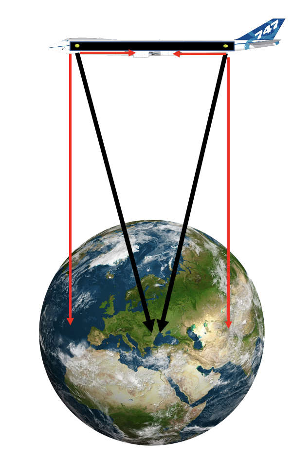

Forrige side🙂 🙁InertialsystemerPADLET

Det er helt riktig. Her ser vi det hele på avstand. Kraftvektorene er slik at de også får en bitteliten komponent langs flyet slik at ballene akselereres mot hverandre.
Neste side